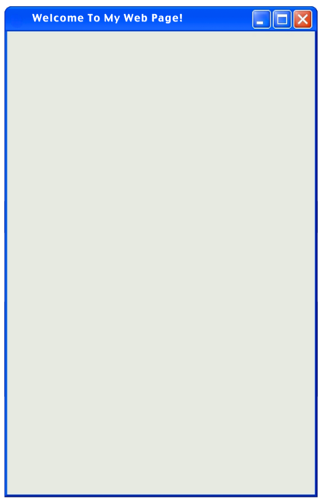
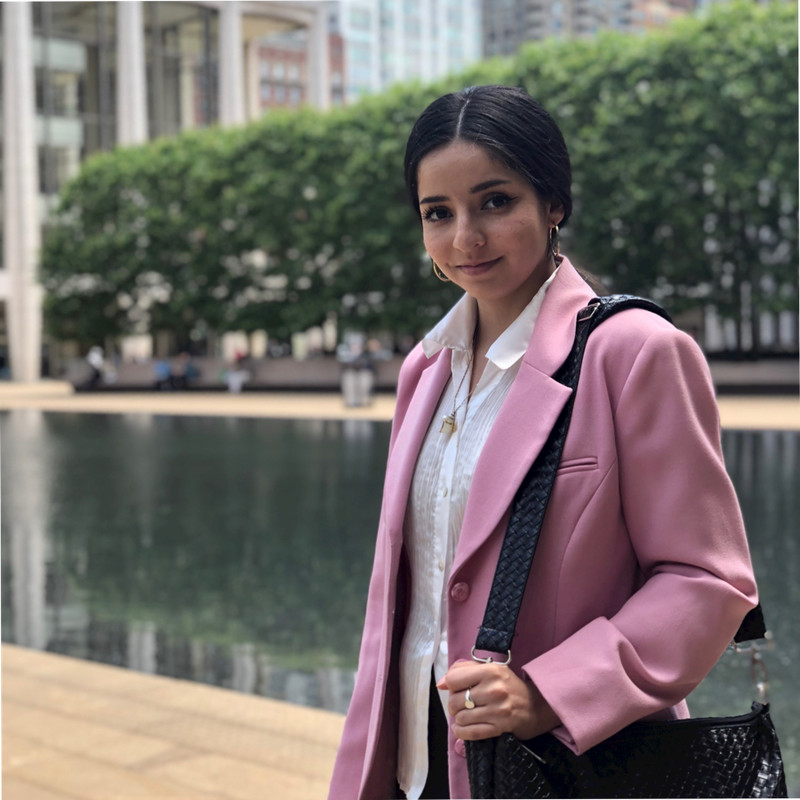

About
My name is Alyssa Victoria Peña, and I work in project operations and bookkeeping on the development of Hôtel Plaza Athénée Nobu, touching as much grass as I can find in New York City. I also have a degree in Computer Science from Fordham University, with a background in software development, data, e-commerce, and digital production. I like figuring out how things work, organizing complicated systems, and finding any excuse I can to write code.
Here is documented proof of me being outside:

Portfolio
Now that I have proved to everyone that I do in fact go outside, take a look at what I’ve accomplished on a computer:
This website was designed by me and you can see how I did it at it's GitHub Page Repository.
Why Windows XP?
I made this website out of nostalgia for the early 2000s and the family desktop I grew up with. Since it was a shared computer, we never changed the wallpaper, and everything stayed on the default settings. One of my earliest computer memories is nesting folders inside folders just to keep the desktop clean and Bliss as visible as possible.
I spent hours on that computer teaching myself HTML and CSS so I could customize blogs and MySpace pages. I learned by inspecting other people's profiles, stealing their code (sorry y'all!), and messing with it until I understood how markup worked. I remember daydreaming about having my own computer just so I could finally change the background.
Twenty-seven years later, Bliss is still the wallpaper on my devices. It reminds me of when computers felt enormous, mysterious, and full of possibility. That feeling is a big part of why I studied Computer Science and why I still enjoy figuring out how things work.
Interests
If that’s not enough to convince you that I’m perfect for your team, here are more things I’m (embarrassingly) obsessed with:
- Star Wars
- Video Games
- Billiards
- Deep Sea Creatures
- Neuroscience
- High-Speed Rail
- Historical Architecture
- Art History
- Sustainability Research
- Web Design
- Data Structures
- C++ (please hire me)